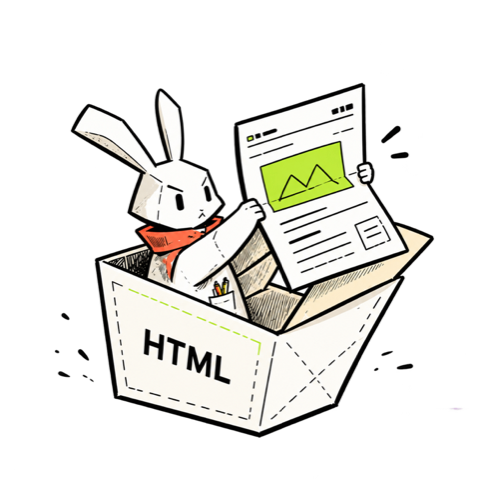
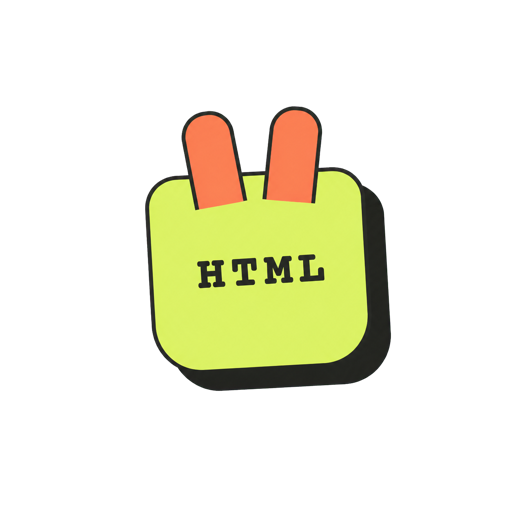

Rabbit Reader · Shared UI Reference
收到文件，就在微信里看。
视觉关键词是手绘、纸张、兔子与开箱感。产品外壳负责让人安心地选择文件；内容打开后，品牌主动缩小，让网页本身成为主角。
01 · 品牌与插画

标志只写 HTML
不再使用 < 与 >。账号头像使用现有橙绿色兔耳 Logo；首页和分享大图使用兔子纸箱插画，不重绘品牌资产。
黑色手绘线是骨架
纸箱、插画和控件统一使用有温度的墨线感；界面组件仍保持清晰、规整和可点击。
插画不是装饰
“兔子从纸箱中打开网页”直接解释了产品用途，首页无需再堆叠大段口号。
02 · 核心色
暖纸
#FFF9F2米白
#FFFDF8墨色
#171715珊瑚
#FF5B43青柠
#B9E63B03 · 组件与标记
HTML · SVG
Ai · PSD · ZIP 等文件
Ai · PSD · ZIP 等文件
打开文件
从微信聊天选择，最多 10 个
粘贴 HTML
打开示例
本机处理 · 原文件不上传

账号头像：橙绿色 Logo
分享大图：首页兔子纸箱插画
分享大图：首页兔子纸箱插画
首页5项格式已确认：突出补充微信聊天文件预览的价值，不用PDF等常规格式占展示位置。协作状态与分工见 参赛前协作清单。
04 · 使用规则
| 主次动作 | 珊瑚色只给“打开文件”这一主动作；粘贴与示例使用描边按钮。 |
|---|---|
| 圆角与阴影 | 按钮 16–20px 圆角；主按钮使用同色硬阴影，工具栏允许珊瑚色偏移阴影。 |
| 示例卡片 | 一行格式标识、一行趣味标题、一句说明；整张卡可点。使用整行宽度，不受微信 style v2 默认按钮宽度限制。加载时禁止重复点按，失败后可重试。 |
| 字体 | 中文使用系统字体保证微信内可读性；品牌图形中的手写字只存在于插画资产内。 |
| 首页与阅读页 | 首页负责选文件；阅读页从微信原生导航下方直接展示正文，不增加文件名或“换文件”顶部栏。返回首页只使用微信原生小房子。 |
| 产品边界 | 首页突出HTML、SVG，补充Ai、PSD、ZIP；完整支持范围与文件实际保存内容有关。DWG图纸不在当前内容预览范围，限制在对应文件打开时说明。 |
05 · 文案与协作
| 一个入口 | 首页与分享文案：miniprogram/utils/product-copy.js；阅读状态与错误：file-reader/skin/copy.js；切换栏样式：styles/file-queue.wxss。 |
|---|---|
| 文字只做一件事 | 按钮写动作，说明写必要条件；状态用短句。错误保留原因、限制与下一步，不能为了短而省掉密码、大小或格式边界。 |
| 技术信息按需出现 | 首页不列解析器、分包和不支持的格式。失败提示给出下一步，底层错误保留在开发诊断；文件内容本身不受界面文案精简影响。 |
| 品牌资产 | 保留现有Logo与兔子插画。账号头像、分享大图、首页插画分别记录，不把更改分享大图视为后台头像已更新。 |
| 本轮与后续 | 首页与示例页共用 styles/tokens.wxss 的品牌颜色；新增页面继续复用。其余历史组件逐步迁移，全部状态与跨端视觉仍需验收。 |